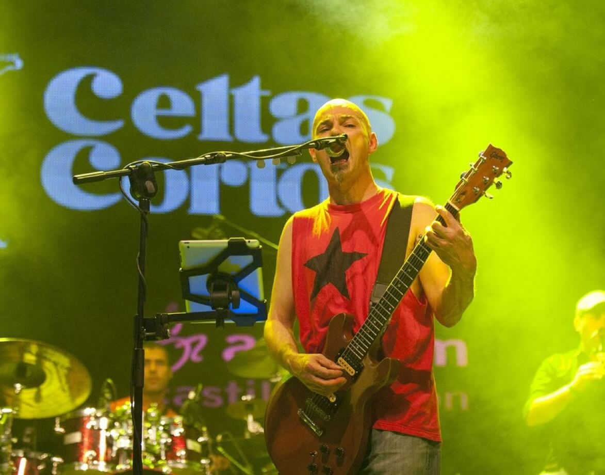

Iglesia de San Clemente
-
Pabellón Viejo
Vermút amenizado por "Talagüelas Show Charanga".
Pabellón Viejo
Verbena infantil de Chispandora Animación y su Espectáculo "Trotamúsicos".
Pabellón Viejo
Reparto de la Tradicionales Migas organizado (2€).
Centro Deportivo Municipal
Carrera organizada por la Sección de "IES Rodanas" de Épila en nuestro PUEBLO, La Muela, que saldrá desde el Centro Deportivo Municipal.
Plaza Don Vicente Tena
Ronda por las calles de nuestro PUEBLO, realizada porla Asociación "Aires de La Muela", que saldrá desde la Plaza de Don Vicente Tena (Casa Consistorial).
Pabellón Viejo
Chocolatada en colaboración con la Asociación "Aires de la Muela"
Pabellón Viejo
Discomóvil Almusic Sound, a cargo del DJ de nuestro pueblo, Jorge Fraile Sánchez "J.Sánchez"
Pabellón Viejo
Discomóvil Almusic Sound, a cargo del DJ de nuestro pueblo, Jorge Fraile Sánchez "J.Sánchez"
Plaza Corazón de Jesús
Diferentes Actividades durante todo el día en el MERCADO “ACES”. Gastronomía, Artesanía, Actividades y Talleres Infantiles (Robótica, Teatro, Pintacaras, Manualidades, Zumba...), Animación Musical...
La actividad de Robótica será realizada por la Asociación de Robótica y Programación de La Muela ADRIPE
Plaza Corazón de Jesús
Mercado “ACES”, organizado por “Centro Delta”.
Plaza Corazón de Jesús
Mercado “ACES”, organizado por “Academia Ágora & Kids and Us”.
Centro Deportivo Municipal
Partido amistoso entre Recreativo de La Muela y una selección de juveniles de nuestra localidad.
Iglesia de San Clemente
A cargo de la Asociación “Aires de La Muela”, en la Iglesia de San Clemente.
Auditorio Municipal
Organizado por el “Ayuntamiento de La Muela”, Entrada (5€).
Auditorio Municipal
Organizada por la “Comisión de Fiestas”.
Plaza Corazón de Jesús
Diferentes Actividades durante todo el día en el MERCADO “ACES”. Gastronomía, Artesanía, Actividades y Talleres Infantiles (Teatro, Pintacaras, Manualidades, Zumba...), Animación Musical...
Plaza Don Vicente Tena
-
Plaza Corazón de Jesús
Mercado “ACES”, organizado por “Centro Delta”.
Auditorio Municipal
organizada por la “Comisión de Fiestas” BONO o Ticket (5€)
Auditorio Municipal
-
Auditorio Municipal
-
Plaza Corazón de Jesús
Mercado “ACES”, organizado por “Muelactiva”.
Plaza de Don Vicente Tena
Espectáculo y Pasacalles de Fuego de K DE CALLE TEATRO.